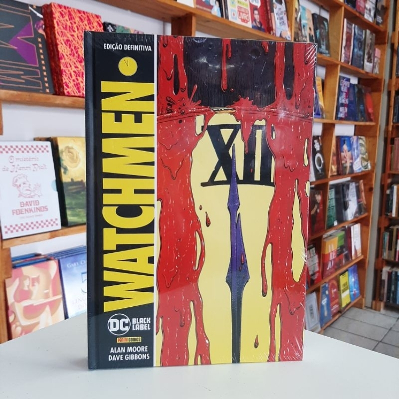

Watchmen é uma série limitada de histórias em quadrinhos de doze edições escrita por Alan Moore e ilustrada por Dave Gibbons . Originalmente publicada pela DC Comics como uma série limitada mensal de 1986 a 1987, foi posteriormente republicada como um livro de bolso comercial, o que popularizou o formato de "romance gráfico". Até o momento, Watchmen continua sendo a única história em quadrinhos a ganhar um Prêmio Hugo, e também é a única história em quadrinhos a aparecer na lista de 2005 da revista Time dos "100 melhores romances em língua inglesa de 1923 até o presente". Watchmen se passa em 1985 , em uma história alternativa dos Estados Unidos, onde super-heróis (mais comumente conhecidos como aventureiros fantasiados ) são reais e o país está se aproximando de uma guerra nuclear com a União Soviética (o Relógio do Juízo Final está a cinco minutos da meia-noite). Ele conta a história de um grupo de super-heróis do passado e do presente e os eventos que cercam o misterioso assassinato de um deles. Watchmen retrata os super-heróis como pessoas reais que devem enfrentar questões éticas e pessoais, que lutam contra neuroses e falhas e que — com uma exceção notável — não têm nada reconhecível como superpoderes. O arquétipo convencional do super-herói de Watchmen , combinado com sua adaptação inovadora de técnicas cinematográficas e uso pesado de simbolismo, diálogo multicamadas e metaficção, influenciou tanto os quadrinhos quanto o cinema.